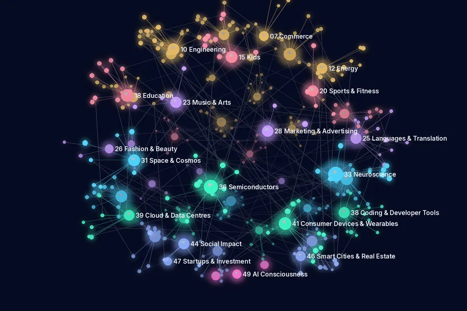

Journal of the AI Universe ✦ Research Papers Today
Research Papers Today
17 November 2026 · 942 new AI research papers in 49 of the 50 categories · Curated by Dr.P.R.K.Varma
320 peer-reviewed papers and 622 preprints, compiled automatically from arXiv, medRxiv, bioRxiv, PubMed, Crossref, OpenAlex, preprint servers via Crossref (Research Square, Preprints.org, SSRN and others), arxiv_rss, europepmc, s2. Each line gives the title (linked), authors, venue, date, evidence label and identifier. Abstracts and figures are not reproduced: open the paper to read it. A listing is not an endorsement, and preprints have not been peer-reviewed. Health papers are not medical advice.
Research map in 3D
17 November 2026: the top 320 papers in 49 categories as a 3D network. Large points are categories, small points are papers (brighter = peer-reviewed), and faint lines join papers in different categories that share a topic word in their titles. Drag to rotate, pinch or use + and − to zoom, and tap a paper to open the original. Titles and links only.

Papers per category (49 categories)
01–14 Industries & Sectors 296 papers
01 AI Filmmaking
3 papers · 3 preprintsProject page →- Measured from the feed: the unsustainable growth of AI video generationTristan Coignion, Aurélie Bugeau, Gael Guennebaud et al.arXiv (cs.AI) · · Preprint · arXiv:2611.17938 · Open access
- TelePhysica: Agentic Reconstruction of Physically Interactive ScenesRuiqi Shu, Xufeng Zhan, Yuanzhi Liang et al.arXiv (cs.CV) · · Preprint · arXiv:2611.18078 · Open access
- JVT: Just Video Transformer makes pixel-space video diffusion simpleJianjun Zhou, Hua Geng, Haoyu GuoarXiv (cs.CV) · · Preprint · arXiv:2611.18549 · Open access
02 AI Agriculture
21 papers · 18 peer-reviewed · 3 preprintsProject page →- AI optimized fertilization and irrigation improve wheat yield and quality in semi-arid calcareous soilsHadad MN, Gholami AiScience · · Peer-reviewed · DOI 10.1016/j.isci.2026.118194 · PMID 43036827 · Open access
- Socio-technical generative AI framework for explainable irrigation-demand prediction support in wise agricultural systemsGarai A, Singh AK, Datta D et al.Agricultural Systems · · Peer-reviewed · DOI 10.1016/j.agsy.2026.105030
- Neural network model based on decomposition strategy for dissolved oxygen forecasting in offshore aquaculture net penYin Y, Liu W, Wang M et al.Biosystems Engineering · · Peer-reviewed · DOI 10.1016/j.biosystemseng.2026.104624
- Optimizing sowing windows and irrigation timing mitigates yield losses from climate extremes in winter wheat-summer maize rotation system: an APSIM-XGBoost modeling approachWang X, Zheng D, Duan X et al.Agricultural Systems · · Peer-reviewed · DOI 10.1016/j.agsy.2026.105072
- Noninvasive inference of presymptomatic abiotic stress in Solanum Lycopersicum from latent electrophysiological dynamics via action potential-based modelWu J, Pachori R, Kwon YPlant signaling & behavior · · Peer-reviewed · DOI 10.1080/15592324.2026.2750612 · PMID 43038161
- S-MADSS: An Agentic Framework for Evidence-Grounded, Compliance-Oriented Decision Support in Atlantic Salmon FarmingZhang C, Gansel LC, Bracke M et al.Smart Agricultural Technology · · Peer-reviewed · DOI 10.1016/j.atech.2026.102734 · Open access
- Dual-View Field Phenotyping of Maize Reproductive Organs Using a Ring-Shaped Ground Vehicle and Task-Specific Deep LearningMa R, Lou X, Peng R et al.Smart Agricultural Technology · · Peer-reviewed · DOI 10.1016/j.atech.2026.102739 · Open access
- Applying economics-guided machine learning models to soybean oil price forecastAnuwat Boonprasope, Puntaree Srichaiyan, N. Tippayawong et al.Journal of Agribusiness in Developing and Emerging Economies · · Peer-reviewed · DOI 10.1108/jadee-05-2026-0375
- Lightweight Deep Learning Architectures for Avocado Disease and Pest Recognition: Two Case Studies with Laboratory Fruit and Field Leaf ImagesYauri J, Navarro-Guillén E, Luján-Pérez D et al.Agriculture · · Peer-reviewed · DOI 10.3390/agriculture16222524 · Open access
- Physically Constrained Estimation of Dynamic Crop Coefficients Using Multisensor Satellite and Field Telemetry DataTanveer U, Ali H, Ahmed J et al.Remote Sensing · · Peer-reviewed · DOI 10.3390/rs18223917 · Open access
03 AI Defence
1 paper · 1 peer-reviewedProject page →- Direction-adaptive expert decomposition via structural-prior Mixture-of-Experts for self-supervised sonar image despecklingCan Guo, Yuduo Zhang, Kaijun Yue et al.Ocean Engineering · · Peer-reviewed · DOI 10.1016/j.oceaneng.2026.129372
04 AI Healthcare
132 papers · 81 peer-reviewed · 51 preprintsProject page →Research listing only, not medical advice.
- External validation of an artificial intelligence-based ECG algorithm for the early diagnosis of acute myocardial infarction: a prospective diagnostic cohort studyChampetier A, Lee MS, Lopez-Ayala P et al.The Lancet regional health. Europe · · Peer-reviewed · DOI 10.1016/j.lanepe.2026.101912 · PMID 43036347 · Open access
- A Meta-Research Review of Statistical Practices for Image-Reliant AI Tools Predicting Lung Cancer OutcomesHou Y, Ward T, Yang CH et al.NEJM AI · · Peer-reviewed · DOI 10.1056/aira2600064 · PMID 43037489
- An open agentic AI co-scientist for clinical and biomedical discoveryRoberts KF, Abrams ZB, Cappelletti L et al.Nature Medicine · · Peer-reviewed · DOI 10.1038/s41591-026-04808-6 · Open access
- Opportunistic Risk Assessment of Major Osteoporotic Fractures from Routine Chest Radiographs Using Deep LearningKim Y, Park CM, Ko H et al.NEJM AI · · Peer-reviewed · DOI 10.1056/aioa2600590 · PMID 43037483
- MedReShaper: mesh-based AI for 3D anatomical shape completion in orbital fracture reconstruction with controlled technical validationGao Y, Du X, Li F et al.Medical image analysis · · Peer-reviewed · DOI 10.1016/j.media.2026.104385 · PMID 43033663
- Interpretable AI links routine clinical gout phenotypes to multi-omic signatures and divergent health trajectoriesLi M, Zhang H, Jiang M et al.npj Digital Medicine · · Peer-reviewed · DOI 10.1038/s41746-026-03507-3 · Open access
- Governing the Environmental Costs of Clinical Artificial IntelligenceYang YT, Sikka NJAMA internal medicine · · Peer-reviewed · DOI 10.1001/jamainternmed.2026.5271 · PMID 43037990
- Feasibility of AI-Guided Handheld Echocardiography for Rheumatic Heart Disease Screening by Non-Cardiologists in Rural Nepal: A Mixed-Methods Diagnostic Accuracy StudyAlattar H, Magesh D, Pal A et al.medRxiv (Cardiovascular Medicine) · · Preprint · DOI 10.64898/2026.11.12.26367974 · Open access
- LabARIA: A Multi-Agent System for Integrative Analytics in Clinical LaboratoriesLi H, Li Y, Xu Z et al.medRxiv (Health Informatics) · · Preprint · DOI 10.64898/2026.11.12.26367970 · Open access
- Hard to Halt: Automation Bias in Agent-Driven Sequencing Prior Authorization WorkflowsNie M, Chung W, Waxler J et al.medRxiv (Health Informatics) · · Preprint · DOI 10.64898/2026.06.16.26355782 · Open access
05 AI Finance
23 papers · 7 peer-reviewed · 16 preprintsProject page →Research listing only, not financial advice.
- AI narrative news sentiment and stock-market returns in ChinaJie Mao, Longjun Wang, Qianhui Yan et al.Empirical Economics · · Peer-reviewed · DOI 10.1007/s00181-026-03002-4
- Monitoring macro-financial fragility: an unsupervised machine learning framework for systemic stress surveillanceMussadiq Abdul Rahim, Muhammad Mushafiq, Sultan Daud Khan et al.SN Business & Economics · · Peer-reviewed · DOI 10.1007/s43546-026-01584-w
- A distributed blockchain integrated machine learning framework for scalable fraud detection and transparency in supply chain networksT. Alyas, Qaiser Abbas, Turki M. Alghamdi et al.Cluster Computing · · Peer-reviewed · DOI 10.1007/s10586-026-06587-8
- FedAuto: An Adaptive Federated Learning Framework for Auto Insurance Claim PredictionHan Q, Ren X, Yang S et al.IEEE Transactions on Consumer Electronics · · Peer-reviewed · DOI 10.1109/tce.2026.3754565
- Detecção de fraudes em transações financeiras com Machine Learning: uma revisão da literaturaAlexandre Siqueira Souza Costa, João Paulo de Assis Marques, Fábio Almeida do NascimentoRevista fisio&terapia. · · Peer-reviewed · DOI 10.69849/6va6aj45 · Open access
- SMART DIGITAL VEHICLE INSURANCE AND CLAIMS PROCESSING PLATFORM WITH INTELLIGENT FRAUD DETECTIONMs. Monisha N, Dr. K. AdiseshaScientiarum: A multidisciplinary journal · · Peer-reviewed · DOI 10.54646/csk2sk02 · Open access
- Explainable AI for tail-risk forecasting in cryptocurrencies: evidence from green and energy-intensive assets for risk-aware investment decisionsYesser Drira, Abir Abderrazek, M. BoujelbéneForesight · · Peer-reviewed · DOI 10.1108/fs-03-2026-0079
- Deep Reinforcement Learning for ESG-Aware Sustainable Portfolio ManagementAdane SSSRN · · Preprint · DOI 10.2139/ssrn.7691078 · Open access
- Who Should Be on the Panel? Task-Conditioned Persona Selection for LLM Trading AgentsBoming Yang, Yuquan Wang, Jiaxian Guo et al.arXiv (q-fin.TR) · · Preprint · arXiv:2611.18150 · Open access
- JFinBench: A Continuously Refreshable Japanese Financial Benchmark from the Latest Certification ExamsIssa Sugiura, Taro Makino, Takashi IshidaarXiv (cs.AI) · · Preprint · arXiv:2611.18130 · Open access
06 AI Law & Investigation
11 papers · 2 peer-reviewed · 9 preprintsProject page →Research listing only, not legal advice.
- AI traces and e-evidence in criminal investigationsRampášek M, Sokol P, Čentéš JForensic Science International: Digital Investigation · · Peer-reviewed · DOI 10.1016/j.fsidi.2026.302242
- Generative AI and the restructuring of criminal opportunityFabian M. TeichmannCrime Science · · Peer-reviewed · DOI 10.1186/s40163-026-00308-7
- A Typology of Typos: Detecting Hallucinated Legal Citations Is Harder Than You ThinkSobel B, Liu B, Park SSSRN · · Preprint · DOI 10.2139/ssrn.7701240
- Auditing Chatbots for Incursion into Professional Legal PracticeNel Escher, Megan Elliott, Isabelle Qian et al.arXiv (cs.CY) · · Preprint · arXiv:2611.17622 · Open access
- Generative Artificial Intelligence in Judicial Processes: A Socio-Technical Scoping Review of Architectures, Tasks, and Institutional Risks (2023–Mid-2026)González Pérez E, Solar Cayón JI, García-Saiz DPreprints.org · · Preprint · DOI 10.20944/preprints202611.1476.v1 · Open access
- The Role of AI-driven Chatbots in Revolutionising Legal Aid Access for Victims in the Pre-complaint StagePandey SK, Parashar ASSRN · · Preprint · DOI 10.2139/ssrn.7690442 · Open access
- Cass R Sunstein. “Manipulation” Cambridge: Cambridge University Press, 2024”, (2026) 89(4) <i>Modern Law Review</i> 678–682 Galbally P, Datar DSSRN · · Preprint · DOI 10.2139/ssrn.7693578
- Language-Driven Clustering of Transfer, Persistence, Prevalence & Recovery Studies for Forensic Activity-Level EvaluationStacey J, Opperman S, Curran J M et al.bioRxiv (Genetics) · · Preprint · DOI 10.64898/2026.11.11.766034 · Open access
- Do Verifier Judgments Survive Abstraction? Measuring Verification Transport for LLM Agent EvaluationDisha Sheshanarayana, Sai Linisha Reddy GoliarXiv (cs.CL) · · Preprint · arXiv:2611.18471 · Open access
- Hierarchical Bayesian physics-augmented neural networks for populations of hyperelastic laws: specimen variability and uncertainty from scarce, noisy dataVincent C. Scholz, Phaedon-Stelios KoutsourelakisarXiv (cs.CE) · · Preprint · arXiv:2611.17892 · Open access
07 AI Commerce
4 papers · 1 peer-reviewed · 3 preprintsProject page →- When do e-commerce prediction models fail over time? cross-task evidence on temporal reliability and model maintenanceZongjun Lan, Yujiao WangScientific Reports · · Peer-reviewed · DOI 10.1038/s41598-026-80365-9 · Open access
- Beyond Bot Labels: Retrospective Consequence-Grounded Ranking of Attributed Cache Harm in E-Commerce LogsJisoo Kim, Youngwoo Seo, Seonghoon JeongarXiv (cs.CR) · · Preprint · arXiv:2611.18027 · Open access
- G-CAST: Governed Continual Self-Training for E-Commerce Agents under Evolving DemandsYuechun Yu, Wenzheng Kong, Xiaofeng Mao et al.arXiv (cs.AI) · · Preprint · arXiv:2611.17814 · Open access
- Robustness Evaluation of GPU Cloud Pricing Benchmarks under Incomplete Observations: A Controlled Missingness StudyJooya WongarXiv (cs.AI) · · Preprint · arXiv:2611.17796 · Open access
08 AI Journalism
1 paper · 1 peer-reviewedProject page →- Disinformation-aware decision-making in supply chains using support vector machinesBably Dolly, Saurav Kumar Jindal, Neeraj Kumar et al.Scientific Reports · · Peer-reviewed · DOI 10.1038/s41598-026-68744-8 · Open access
09 AI Architecture
1 paper · 1 preprintProject page →- Generative Design with Real-time Physics Explainability: Towards Product Definition in the Age of AIM. de Campos, C. Drygala, E. Ross et al.arXiv (cs.LG) · · Preprint · arXiv:2611.17560 · Open access
10 AI Engineering
17 papers · 9 peer-reviewed · 8 preprintsProject page →- Prediction of MMAW performance on nanostructured hardfaced alloys using general regression neural network: A case studySaha A, Ranjan R, Kebede AW et al.PloS one · · Peer-reviewed · DOI 10.1371/journal.pone.0361981 · PMID 43038202
- A reinforced sampling-based diffusion model for imbalanced fault diagnosis of governor valve actuatorsJiang Z, Liu Y, Tang J et al.Engineering Applications of Artificial Intelligence · · Peer-reviewed · DOI 10.1016/j.engappai.2026.116717
- Relationship-aware multichannel diffusion augmentation and graph convolutional fusion for small-sample rotating machinery fault diagnosisWang X, Fang L, Che J et al.Journal of Intelligent Manufacturing · · Peer-reviewed · DOI 10.1007/s10845-026-03025-9
- Fokker–Planck diffusion dynamics of S&P 500 sector return distributions via physicsinformed neural networksKim DJ, Choi SYFinance Research Letters · · Peer-reviewed · DOI 10.1016/j.frl.2026.111059
- Phase-Error State Classification in Capacitive Voltage Transformers Using Physics-Informed Three-Phase Angle FeaturesZhang C, Du B, Hua G et al.IEEE Sensors Journal · · Peer-reviewed · DOI 10.1109/jsen.2026.3752184
- Boundary-integral Fourier-feature physics-informed neural modeling for open-domain acoustic–elastic scatteringMengting Liu, Shengqi Yu, Zhiliang Qin et al.Engineering Analysis with Boundary Elements · · Peer-reviewed · DOI 10.1016/j.enganabound.2026.107146 · Open access
- LLM-driven performance grade similarity matrix construction for generalized zero-shot industrial process operating performance assessmentSiqi Wang, Yan Liu, Ruicheng Ma et al.Journal of Process Control · · Peer-reviewed · DOI 10.1016/j.jprocont.2026.103892
- Domain-decoupled physics-informed neural networks for inverse material property estimation from acoustic fieldsBrand P, Feldmann R, Melz TJASA express letters · · Peer-reviewed · DOI 10.1121/10.0047523 · PMID 43037486
- From spectra to performance: Multimodal machine learning for organic optoelectronic materials discoveryYan Y, Fu X, Hao J et al.The Journal of chemical physics · · Peer-reviewed · DOI 10.1063/5.0356266 · PMID 43038145
- Fuse-PINN: Combining Finite Element Methods and Physics-Informed Neural Networks to enable massively parallel simulations of non-linear PDEsStanislas Pamela, Nicolas Pailliez, Emmanuel Franck et al.arXiv (cs.LG) · · Preprint · arXiv:2611.18409 · Open access
11 AI Robotics
47 papers · 8 peer-reviewed · 39 preprintsProject page →- Talk to Act: A Synthetic Multi-Turn Dialogue Benchmark for Human Intent Extraction and Action Planning in RoboticsDeepu Krishnareddy, Mohammad Haziq Khan, Michael Danner et al.arXiv (cs.RO) · · Preprint · arXiv:2611.17549 · Open access
- Autonomous surgical systems and artificial intelligence integration: where are we now?Zuluaga L, Levieddin J, Okhawere KE et al.Current opinion in urology · · Peer-reviewed · DOI 10.1097/mou.0000000000001460 · PMID 43038270
- Dual-branch convolutional network with coordinate attention for surface roughness prediction in robotic milling of complex surfacesWu B, Li K, Tang X et al.Engineering Applications of Artificial Intelligence · · Peer-reviewed · DOI 10.1016/j.engappai.2026.116700
- Use of infrared thermography and machine learning to predict the infectious etiology of subclinical bovine mastitis in a robotic milking systemCaracuschanski FD, Santana RCM, Brassolatti LC et al.Tropical animal health and production · · Peer-reviewed · DOI 10.1007/s11250-026-05475-y · PMID 43037772
- DronePoseFormer: Motion-Aware Temporal Transformer for Monocular UAV 6D Pose EstimationXing W, Yu Y, Meng X et al.IEEE Transactions on Automation Science and Engineering · · Peer-reviewed · DOI 10.1109/tase.2026.3753642
- Hierarchical Actor-Critic-based Deep Reinforcement Learning for Sensing-Communication-Computing-Control Collaboration in UAV-MECSong M, Xu C, Zhang J et al.IEEE Transactions on Consumer Electronics · · Peer-reviewed · DOI 10.1109/tce.2026.3753652
- Stage-aware vision transformer for cotton canopy water-status assessment using UAV multispectral imageryZhang Z, He Q, Yang M et al.Computers and Electronics in Agriculture · · Peer-reviewed · DOI 10.1016/j.compag.2026.112663
- Spatially robust pixel-based mapping of biotic stress in Pinus nigra using unmanned aerial vehicle multispectral imagery and Random ForestMeral A, Sivrikaya IS, Arslan OE et al.Pest management science · · Peer-reviewed · DOI 10.1002/ps.71498 · PMID 43035309
- Trust formation across AI embodiments: how robotic, virtual, and embedded systems shape user behavior in healthcarePouyan Esmaeilzadeh, Mahed Maddah, Tala MirzaeiJournal of Systems and Information Technology · · Peer-reviewed · DOI 10.1108/jsit-01-2026-0015
- Vision-Language-Action Models: A Life-Cycle Survey of Design, Training and DeploymentSuvarna Kadam, Soran ParsaarXiv (cs.RO) · · Preprint · arXiv:2611.18372 · Open access
12 AI Energy
12 papers · 5 peer-reviewed · 7 preprintsProject page →- World-model-inspired latent action priors for home energy optimizationSebastián López Flórez, Guillermo Hernández, Albano Carrera et al.Computers & Electrical Engineering · · Peer-reviewed · DOI 10.1016/j.compeleceng.2026.111652 · Open access
- An adaptive fusion-based feature selection pipeline for battery pack state-of-health estimation within a machine learning frameworkYang S, Hou L, Zhang C et al.Applied Energy · · Peer-reviewed · DOI 10.1016/j.apenergy.2026.129188
- TrajBattFM: battery state of health trajectory forecasting by integrating short-window features with a foundation modelZhao D, Lin W, Lu J et al.Applied Energy · · Peer-reviewed · DOI 10.1016/j.apenergy.2026.129284 · Open access
- Artificial intelligence augmented Runge-Kutta integration with surrogate embedding for fully coupled floating wind turbine simulationChen P, Cheng Z, Venter M et al.Engineering Applications of Artificial Intelligence · · Peer-reviewed · DOI 10.1016/j.engappai.2026.116715
- Unified Deep Learning Framework for Interpretable Remaining Useful Life Prediction of Lithium-Ion Batteries under Stochastic Group-Behavioral Usage ScenariosJeong YJ, Kim H, Jung S et al.Advanced science (Weinheim, Baden-Wurttemberg, Germany) · · Peer-reviewed · DOI 10.1002/advs.78745 · PMID 43036053
- Battery Energy Storage Sizing in PV Ramp-Rate Smoothing using Constraint-Aware Reinforcement Learning-Based ControllerArash Omidi, Tanmay Mishra, Mads R. AlmassalkhiarXiv (eess.SY) · · Preprint · arXiv:2611.17612 · Open access
- Day-Ahead Forecasting of Sunshine and Wind for a Dust- and Heat- Prone Hyper-Arid Mini-Grid: Machine Learning against Persistence and SARIMA at Agadez, Bilma and N'Guigmi, Niger (2015-2024) A real-data benchmark with regime-aware features, cross-site transfer and conformal calibrationGuero MMResearch Square · · Preprint · DOI 10.21203/rs.3.rs-11245814/v1 · Open access
- Large Language Model-Empowered Intelligent Agent for Adaptive Fast-Charging Control of Lithium-Ion BatteriesJoey Chan, Haoyu Pan, Zhen Chen et al.arXiv (cs.AI) · · Preprint · arXiv:2611.18140 · Open access
- Protection-Oriented Assessment of Machine Learning-Based Fault Detection in Power SystemsJulian Oelhaf, Georg Kordowich, Changhun Kim et al.arXiv (cs.LG) · · Preprint · arXiv:2611.17872 · Open access
- AI-Agent-Orchestrated DFT Screening of Conjugated Donor and Electron-Acceptor Building Blocks for Organic PhotovoltaicsIgbokwe EE, Onu EFengrXiv · · Preprint · DOI 10.31224/8804 · Open access
13 AI Transportation
14 papers · 4 peer-reviewed · 10 preprintsProject page →- Images Assist You More: Cross-Modal Self-Supervised Learning for Autonomous Driving LiDAR Point CloudsWu Y, Xie J, Li Z et al.IEEE Transactions on Intelligent Transportation Systems · · Peer-reviewed · DOI 10.1109/tits.2026.3728479
- A 28-nm Vision AI SoC With a Time-Interleaved CNN Pipeline for Real-Time Multi-Occupant Interaction in Smart Vehicle CabinsSo J, Kim MIEEE Transactions on Consumer Electronics · · Peer-reviewed · DOI 10.1109/tce.2026.3753992
- Geometric diabatization via learned parallel transport of electronic statesHütter M, Ončák MThe Journal of chemical physics · · Peer-reviewed · DOI 10.1063/5.0355966 · PMID 43038153
- A Novel Deep Learning Network for Fractional Vegetation Cover Calculation Using Full-Waveform LiDARXu M, Cong K, Zhao X et al.Remote Sensing · · Peer-reviewed · DOI 10.3390/rs18223928 · Open access
- Ego2Flow: Benchmarking the Traffic-System Impact of Autonomous Driving on Maps Distilled from Real-World RoadsYu Dong, Weiying Shen, Hangyu Li et al.arXiv (cs.RO) · · Preprint · arXiv:2611.17720 · Open access
- Adversarial Tracking: Attacks on Image Sensors for Object Tracking in Autonomous VehiclesHan Wu, Alex Chan, Ekin Can Erkus et al.arXiv (cs.CV) · · Preprint · arXiv:2611.17505 · Open access
- Toward Resilient Self-Driving Laboratories through Telerobotic InterventionsZiheng Wu, Adrian Vecina Tercero, Andre A. Fatehi et al.arXiv (cs.RO) · · Preprint · arXiv:2611.18496 · Open access
- EViDS: An Environment--Vehicle Dynamics Integrated Simulation Platform for Intelligent Chassis DevelopmentLu Xiong, Yiming Zhou, Xuge Hu et al.arXiv (cs.RO) · · Preprint · arXiv:2611.17660 · Open access
- In Situ Monitoring and Predictive Modeling of Harmful Algal Blooms with Autonomous Surface VehiclesNenyi Kweku Nkensen Dadson, Jean Paul Gonzalez, Daniel P. Arabie et al.arXiv (cs.RO) · · Preprint · arXiv:2611.18501 · Open access
- Channel Prediction Using Deep Recurrent Neural Network with EVT-based Adaptive Quantile Loss FunctionNiloofar Mehrnia, Parmida Valiahdi, Sinem Coleri et al.arXiv (eess.SP) · · Preprint · arXiv:2611.18171 · Open access
14 AI Manufacturing
9 papers · 3 peer-reviewed · 6 preprintsProject page →- AI-based real-time control of custom construction manufacturing: comparative evaluation of experience-based, search-based, and hybrid strategiesFlood I, Hill MEAutomation in Construction · · Peer-reviewed · DOI 10.1016/j.autcon.2026.107382
- A transformer defect detection method based on state space model and cross-domain feature fusionWeihua Zhou, Nan Wang, Yunhan Li et al.Scientific Reports · · Peer-reviewed · DOI 10.1038/s41598-026-78578-z · Open access
- RCE-YOLO: receptive-field attention and content-aware feature enhancement for aerospace transparent-component defect detectionRui Zhang, Zhen He, Yingjie ZhaoScientific Reports · · Peer-reviewed · DOI 10.1038/s41598-026-80140-w · Open access
- Federated Physics-Informed Thermal Field Prediction Across Unseen Geometries in Distributed Additive ManufacturingAmirul Islam Saimon, Zhenyu, KongarXiv (cs.LG) · · Preprint · arXiv:2611.17794 · Open access
- AI-Driven Camera Robots in Smart Manufacturing: A Comprehensive Review of Quality Assurance, IoT Integration, and Safety ProtocolsKalhor DSSRN · · Preprint · DOI 10.2139/ssrn.7692005 · Open access
- Process Mining-Enabled Federated Anomaly Detection for the Industrial IoTFrancesco Vitale, Salvatore Bramante, Francesco Flammini et al.arXiv (cs.LG) · · Preprint · arXiv:2611.17869 · Open access
- STAMP: Manufacturing-Informed Generative Design and Shape Optimization of Sheet PanelsJihoon Kim, Jun Hyeok Song, Wonho Ha et al.arXiv (cs.LG) · · Preprint · arXiv:2611.18144 · Open access
- Technical and Organizational Barriers to AI and Automation Implementation Maturity: Evidence from Japanese ManufacturingYao CNPreprints.org · · Preprint · DOI 10.20944/preprints202611.1496.v1 · Open access
- Agent-written heuristics versus commercial solvers on unsolved job-shop benchmark instancesAndre Albrecht, Enzo Morosini Frazzon, Leandro C. Coelho et al.arXiv (math.OC) · · Preprint · arXiv:2611.17682 · Open access
15–20 People & Life Stages 63 papers
15 AI Kids
8 papers · 7 peer-reviewed · 1 preprintProject page →- Identification of associative factors for recurrent respiratory tract infection using machine learning models in preschoolersLi C, Wang Q, Wang X et al.Pediatric research · · Peer-reviewed · DOI 10.1038/s41390-026-05565-5 · PMID 43035507
- Association of food consumption patterns with height growth of children and adolescents: A population-based observational study over four decades of food transitions in ChinaLi T, Dang J, Li Y et al.PLoS medicine · · Peer-reviewed · DOI 10.1371/journal.pmed.1004958 · PMID 43038250
- Machine learning-based differentiation of congenital and adolescent idiopathic scoliosis using routine radiographic parametersAtes A, Gulsever CI, Ozkara Bilgili C et al.European spine journal : official publication of the European Spine Society, the European Spinal Deformity Society, and the European Section of the Cervical Spine Research Society · · Peer-reviewed · DOI 10.1007/s00586-026-10515-0 · PMID 43037682
- Development and External Validation of a Machine Learning-Based Predictive Model for Postoperative Recurrence in Pediatric Chronic RhinosinusitisLee HC, Jung CM, Cho HJ et al.International forum of allergy & rhinology · · Peer-reviewed · DOI 10.1002/alr.70309 · PMID 43037196
- APH-Net: a multi-task uncertainty-weighted neural architecture for subgroup-level pediatric health surveillance modelingLiying Wang, 济河 康, Quantao HeScientific Reports · · Peer-reviewed · DOI 10.1038/s41598-026-79268-6 · Open access
- [AI-manipulated medical records as part of medical child abuse]Jørs AT, Thøstesen LM, Sejr MHUgeskrift for laeger · · Peer-reviewed · DOI 10.61409/v02260089 · PMID 43036141
- Development and Validation of a LASSO-Based Prediction Model for Postoperative Bleeding Following Pediatric Tonsillectomy and AdenoidectomyYang Y, Li L, Cheng QAnnali italiani di chirurgia · · Peer-reviewed · DOI 10.62713/aic.4852 · PMID 43036211
- Image-Based Bilirubin Estimation for Non-Invasive Neonatal Jaundice Assessment Using Swin Transformer V2Muhajab H, Muhajab AResearch Square · · Preprint · DOI 10.21203/rs.3.rs-10963208/v1 · Open access
16 AI Geriatric
6 papers · 1 peer-reviewed · 5 preprintsProject page →- Deciphering the impact of chronological age on sleep stage transition dynamics for disorder classificationAli E, Daneshkhah A, He F et al.PLOS digital health · · Peer-reviewed · DOI 10.1371/journal.pdig.0001800 · PMID 43038280
- Interpretable machine learning for predicting bone metastasis at initial diagnosis in elderly patients with small cell lung cancer: dual-centre development and external validation in two independent cohortsSun D, Zheng Y, Ma Z et al.Research Square · · Preprint · DOI 10.21203/rs.3.rs-11570772/v1 · Open access
- Machine Learning Prediction of In-Hospital Mortality in Elderly ICU Patients with COPD and Heart Failure: A Dual-Database StudyLin J, Han S, Wu R et al.Research Square · · Preprint · DOI 10.21203/rs.3.rs-11158956/v1 · Open access
- Voice-Based Conversational Agents as AI Care Assistants: Evaluating Personalization, Intervention Delivery Fidelity, and Privacy Expectations in Older Adults' CareThalia Viranda, Shupeng Wang, Jia Bo et al.arXiv (cs.HC) · · Preprint · arXiv:2611.18385 · Open access
- Use-case-driven ontology modeling with the NeOn methodology for ambient assisted livingDaniele Spoladore, Marco Sacco, Alberto Trombetta et al.arXiv (cs.DB) · · Preprint · arXiv:2611.17466 · Open access
- A Locally-Run, Multimodal Screening Assistant Combining Conversational NLP, Self-Report Questionnaires, and Clock-Drawing Analysis for Low-Cost Early Cognitive-Decline Pre-ScreeningDana A, Samanta AKResearch Square · · Preprint · DOI 10.21203/rs.3.rs-11719517/v1 · Open access
17 AI Psychology
12 papers · 9 peer-reviewed · 3 preprintsProject page →Research listing only, not medical advice.
- Governance-ready AI in mental healthLuke Balcombe, Diego De Leo, Ruggero Andrisano Ruggieri et al.Australian Journal of Psychology · · Peer-reviewed · DOI 10.1080/00049530.2026.2760020 · Open access
- Adherence, self-management, and beyond in the artificial intelligence era: a commentary on what pediatric psychologists needEaton CK, Ortega A, Bobadilla G et al.Journal of pediatric psychology · · Peer-reviewed · DOI 10.1093/jpepsy/jsag080 · PMID 43038085
- Can AI-assisted analysis of antidepressant drug online reviewers (ADORE) inform real-world use of antidepressants?Abraham MM, Insel TR, Manji HK et al.Journal of affective disorders · · Peer-reviewed · DOI 10.1016/j.jad.2026.122743 · PMID 43035153
- Cascades of Drift: A Taxonomy of Interactive Drift and Mental Health Risk in Longitudinal Human-AI InteractionsWei MHMayo Clinic Proceedings: Digital Health · · Peer-reviewed · DOI 10.1016/j.mcpdig.2026.100430 · Open access
- Real-time clinical decision support in mental health diagnosis using integrated machine learning and graph neural network frameworksNarote AD, Kolekar UEngineering Applications of Artificial Intelligence · · Peer-reviewed · DOI 10.1016/j.engappai.2026.116776
- Large Language Models and Empathy: Implications for Patient Trust in OtolaryngologyBaik E, Livingston C, Rameau AOtolaryngology--head and neck surgery : official journal of American Academy of Otolaryngology-Head and Neck Surgery · · Peer-reviewed · DOI 10.1002/ohn.70532 · PMID 43036999
- Ecosystem responses to moisture stress across contrasting drylands: Evidence from machine learning and panel models in Borno-Yobe and KalmykiaN. Nwobi, M. Redina, Joseph James Umar et al.Earth Science Informatics · · Peer-reviewed · DOI 10.1007/s12145-026-02291-8
- TALQ: A reproducible language model questionnaire for dense measurement of depressive and anxious statesM. E. Levesque, K. E. Poskanzer, J. Woolley et al.medRxiv · · Peer-reviewed · DOI 10.64898/2026.11.12.26367797 · Open access
- Major depressive disorder involves motivational conflicts in emotion regulation in daily lifeMizrahi Lakan S, Hu D, Millgram Y et al.Journal of psychopathology and clinical science · · Peer-reviewed · DOI 10.1037/abn0001193 · PMID 43038079
- A Knowledge Graph and Large Language Model Framework for Personalized Clinical Decision Support in Bipolar Disorder and Borderline Personality Disorder: The KG- Psy FrameworkHarris ZM, Rahaeimehr R, Hesaraki SResearch Square · · Preprint · DOI 10.21203/rs.3.rs-9621282/v1 · Open access
18 AI Education
26 papers · 13 peer-reviewed · 13 preprintsProject page →- Dual chain-of-thought AI‑PDCA framework for clinical history taking and documentationChen Z, Chen Y, Hu W et al.npj Digital Medicine · · Peer-reviewed · DOI 10.1038/s41746-026-03430-7 · Open access
- An experimental study on enhancing learning motivation and academic performance through AI literacy trainingYuting Wang, Guandong Song, 甄洪芳Scientific Reports · · Peer-reviewed · DOI 10.1038/s41598-026-79820-4 · Open access
- Curriculum-aligned analysis of assessment feedback: a retrieval-augmented large language model approach for revealing fine-grained student error patterns in higher educationLin-Xin Hua, Jia Xu, Li-Rui Guo et al.International Journal of Educational Technology in Higher Education · · Peer-reviewed · DOI 10.1186/s41239-026-00640-7
- Development and psychometric validation of the generative AI Educator PerspectoMeter Scale (GAIE-PM) in medical education: a descriptive scale development studyNoushin Kohan, S. Ahmady, Manijeh Hooshmandja et al.Scientific Reports · · Peer-reviewed · DOI 10.1038/s41598-026-65645-8
- When Clarity Masks Correctness: Rural Secondary Students’ Evaluation of AI-Generated Physics ExplanationsNailya Shertayeva, GANIYA ORMANOVA, Bibigul Shagraуеva et al.Journal of Science Education and Technology · · Peer-reviewed · DOI 10.1007/s10956-026-10373-x
- Learning curve analysis of artificial intelligence-assisted ultrasound for teaching popliteal fossa sciatic nerve block to novice anesthesiologists: a pilot randomized educational studyWang Y, Chen Y, Chen F et al.PeerJ · · Peer-reviewed · DOI 10.7717/peerj.21877 · PMID 43036679 · Open access
- Tecnologías y racionalidades en disputa: tensiones éticas, cognitivas y algorítmicas en la integración de la IA en la educación superiorEmanuel Arredondo González, Cristian Villegas DiantaOlhar de Professor · · Peer-reviewed · DOI 10.5212/olharprofr.v.29.26777.053 · Open access
- KESADARAN MAHASISWA FAKULTAS ILMU SOSIAL DAN ILMU POLITIK TERHADAP KEBIJAKAN ARTIFICIAL INTELLIGENCE DALAM AKTIVITAS AKADEMIKArisya Adhani Novandra, Riyan Nur Fitri Pratama, Noviana Eka Widyastuti et al.EDUTECH Jurnal Inovasi Pendidikan Berbantuan Teknologi · · Peer-reviewed · DOI 10.51878/edutech.v6i4.16764 · Open access
- Analisis Penggunaan AI Dalam Mendukung Kemandirian Belajar Siswa SMA Mathla'ul AnwarAnisa Rahmah, Cicih ., Ria AuliaJournal of Business Economics and Management · · Peer-reviewed · DOI 10.62379/jbem.v3i2.2201 · Open access
- AACN Competencies as an AI Literacy Framework: A Graduate PMHNP EvaluationPair V, Katz SThe Journal of nursing education · · Peer-reviewed · DOI 10.3928/01484834-20261014-01 · PMID 43038166
19 AI Work & Employment
7 papers · 2 peer-reviewed · 5 preprintsProject page →- Automating inequality? Gender bias in AI-mediated labor marketsElass K, Gauthier G, Nozza D et al.Proceedings of the National Academy of Sciences of the United States of America · · Peer-reviewed · DOI 10.1073/pnas.2534118123 · PMID 43038448 · Open access
- When knowledge conversion pays off: knowledge utilization and ethical AI climate for Generation Z employees’ job performanceMd Asadul Islam, Subbulakshmi Somu, D. VrontisJournal of Knowledge Management · · Peer-reviewed · DOI 10.1108/jkm-05-2026-0954
- Who Counts as Exposed? Measurement Choices in an Open, Re-estimable Index of Occupational AI ExposureLuca Mouchel, Pierre Bouquet, Yossi SheffiarXiv (cs.IR) · · Preprint · arXiv:2611.18168 · Open access
- The AI Revolution, Jobs, and Work in Historical PerspectiveAdler PSSSRN · · Preprint · DOI 10.2139/ssrn.7706358
- Substitution and the Pension Base: How AI Labor Substitution Threatens the Contributory Foundation of Brazil's RGPS -and Why It Warrants Individual and Institutional Reflectionde Miranda Neto ASSRN · · Preprint · DOI 10.2139/ssrn.7692681 · Open access
- Reported Operator Injuries and Wage Expenditure in US Bus Agencies 2019 to 2024Ankam KSSRN · · Preprint · DOI 10.2139/ssrn.7693400
- AI and the Two Margins of Work: Why Job Losses Show Up Before Job CreationMark Esposito, Liu ZhangarXiv (econ.GN) · · Preprint · arXiv:2611.17530 · Open access
20 AI Sports & Fitness
4 papers · 2 peer-reviewed · 2 preprintsProject page →- Wearable sensing technologies and machine learning for fatigue assessment in sport horsesLi Y, Yan Z, Chen XEquine veterinary journal · · Peer-reviewed · DOI 10.1002/evj.70360 · PMID 43035340
- BoneNet: a framework for predicting MSK-FE-estimated femoral neck strain patterns from exercise IMU dataAltai Z, Hollinger D, Phillips ATM et al.Journal of biomechanics · · Peer-reviewed · DOI 10.1016/j.jbiomech.2026.113677 · PMID 43035064
- Chatbot as an intervention on physical activity: A systematic review and meta-analysis with meta-regressionFu L, Song D, Bai YmedRxiv (Public And Global Health) · · Preprint · DOI 10.64898/2026.11.13.26358176 · Open access
- MarathonTS: a benchmark of long synthetic time series from window assembly and long-series generatorsIlyas Varshavskiy, Sergey Shulgin, Shuhrat Khalilbekov et al.arXiv (cs.LG) · · Preprint · arXiv:2611.18190 · Open access
21–29 Culture & Belief 26 papers
21 AI Spirituality
1 paper · 1 peer-reviewedProject page →- Potentials and Pitfalls of Artificial Intelligence in Mindfulness-based and Mindfulness-informed Approaches: A Systematic Review of the LiteratureMaren M. Michaelsen, H. Müller-Peters, Tobias Esch et al.Mind · · Peer-reviewed · DOI 10.61936/themind/2026111637
23 AI Music & Arts
3 papers · 3 preprintsProject page →- OmniScore-Bench: Evaluating Vision-Language Models on Musical Score ReadingCongren Dai, Zhancheng Guo, Danni Zhao et al.arXiv (cs.AI) · · Preprint · arXiv:2611.17870 · Open access
- CoTTAGE: An Explainable Judge for Text-to-Audio GenerationYu-Xiang Lin, Yun-Man Hsu, Bo-Ru Lu et al.arXiv (cs.SD) · · Preprint · arXiv:2611.17644 · Open access
- Dancing Tokens on the Vocabulary Network from LLM GenerationYuan-Chao HuarXiv (cs.AI) · · Preprint · arXiv:2611.18248 · Open access
24 AI Literature
2 papers · 1 peer-reviewed · 1 preprintProject page →- Literary voice, cultural meaning, and human revision in large language model translation from 2022 to 2026Devina Antania Putri MahariantoJournal of Language and Literature Inquiry · · Peer-reviewed · DOI 10.55942/jlli.v1i2.2364 · Open access
- Poetry 'resurrection' from LLMsVincent Cellucci, Peter van der PuttenarXiv (cs.CL) · · Preprint · arXiv:2611.17464 · Open access
25 AI Languages & Translation
12 papers · 2 peer-reviewed · 10 preprintsProject page →- Automatic cross-lingual annotation of clause-based utterance fluency in L2 speechJialiang Lu, Reiko SatoResearch Methods in Applied Linguistics · · Peer-reviewed · DOI 10.1016/j.rmal.2026.100397 · Open access
- Interpretable machine learning models classify current activities of daily living care need in rural Chinese adults aged 80 years and olderLing-Ling Wang, Yuwen Yan, Bo-Wen Liu et al.Discover Computing · · Peer-reviewed · DOI 10.1007/s10791-026-10862-y
- VEPO: Mitigating Multilingual Hallucinations in LVLMs via Visual Evidence-guided Preference OptimizationChengpeng Fu, Xiaocheng Feng, Wenshuai Huo et al.arXiv (cs.CL) · · Preprint · arXiv:2611.18096 · Open access
- What Do Multilingual Self-Supervised Speech Encoders Know About Sentence Meaning?Kevin Krahn, Eric Fosler-LussierarXiv (cs.CL) · · Preprint · arXiv:2611.17686 · Open access
- Cross-Linguistic Acoustic Biomarkers of Cognitive Impairment Across Interactive and Single-Speaker Speech TasksKenyu Ikeuchi, Tomoaki Ohtsuki, Michelle Cohn et al.arXiv (cs.AI) · · Preprint · arXiv:2611.17710 · Open access
- SemRAG: Semantic-Guided Sentence-Level Retrieval-Augmented Sign Language ProductionXiao Liu, Shiwei Gan, Yafeng Yin et al.arXiv (cs.CV) · · Preprint · arXiv:2611.18189 · Open access
- Toward Universal Translatability: On the Statistical Ontology of Generative AIKatia SchwerzmannarXiv (cs.CL) · · Preprint · arXiv:2611.17963 · Open access
- From Images to Grounded Edits: A Real-World Benchmark for Chinese Grammatical Error Correction in Handwritten EssaysWeiru Zhang, Yuzhong Hong, Junwei Bao et al.arXiv (cs.CV) · · Preprint · arXiv:2611.17966 · Open access
- Semantic Translation of User Intent into Kubernetes Placement Constraints for AI WorkflowsChondrogiannis E, Psomakelis E, Karanastasis EResearch Square · · Preprint · DOI 10.21203/rs.3.rs-11541809/v1 · Open access
- BLiMP-RO: A Benchmark of Linguistic Minimal Pairs for RomanianRadu-Stefan Popa, Valentin Feroiu, Adina Camelia Bleotu et al.arXiv (cs.CL) · · Preprint · arXiv:2611.17836 · Open access
26 AI Fashion & Beauty
2 papers · 1 peer-reviewed · 1 preprintProject page →- DSG-BDF: a design semantic graph-guided bidirectional diffusion framework for controllable clothing pattern generation based on ControlNet and CLIP ViT-L/14Ge Pan, Yi Fang, Yingzi Zhang et al.Scientific Reports · · Peer-reviewed · DOI 10.1038/s41598-026-80722-8 · Open access
- Pose-based Neural Clothing for Animated CharactersJulian N. Heidenreich, Vinicius C. Azevedo, Jakob Buhmann et al.arXiv (cs.GR) · · Preprint · arXiv:2611.18253 · Open access
27 AI Travel & Hospitality
1 paper · 1 peer-reviewedProject page →- Algorithmic confinement: How AI-powered travel recommendations narrow destination and temporal diversity in tourism?Lee C, Yhee Y, Koo C et al.Tourism Management · · Peer-reviewed · DOI 10.1016/j.tourman.2026.105568
28 AI Marketing & Advertising
2 papers · 1 peer-reviewed · 1 preprintProject page →- Unboxing unhealthy food marketing: An analysis of the extent and nature of unhealthy food marketing to children on YouTube in Canada using the CHOPPED artificial intelligence systemS. Al Sharani, T. Williamson, S. Fietz et al.medRxiv · · Peer-reviewed · DOI 10.64898/2026.11.12.26367461 · Open access
- Creative Product Design under Brand Image ConstraintsTakeshi Onishi, Hiroya Makino, Takahiro Yamaguchi et al.arXiv (cs.CV) · · Preprint · arXiv:2611.17762 · Open access
29 AI Gaming & Immersive Worlds
3 papers · 1 peer-reviewed · 2 preprintsProject page →- Understanding adoption of AI-enabled metaverse, AR, and VR for training: An integrated TTF-UTAUT2 model using hybrid SEM-ANNAzza Abdel Monem, Khaled Abdelqader, Mohammed Asaad Ghazal et al.Contemporary Educational Technology · · Peer-reviewed · DOI 10.30935/cedtech/19954 · Open access
- OCTAVE: A Capability-Resolved Benchmark for End-to-End HTML5 Game GenerationKehang Li, Xinlan Xu, Yulin Jin et al.arXiv (cs.AI) · · Preprint · arXiv:2611.17681 · Open access
- SceneAgent: A Multi-Agent Framework for Portable Game Scene GenerationXingyi Li, Jiahao Yang, Yiqin Zhu et al.arXiv (cs.CV) · · Preprint · arXiv:2611.17821 · Open access
30–35 Science 299 papers
30 AI Research & Innovation
151 papers · 24 peer-reviewed · 127 preprintsProject page →- Generalizable equivariant diffusion models for non-Abelian lattice gauge theoryAarts G, Habibi DE, Ipp A et al.Physical Review Letters · · Peer-reviewed · DOI 10.1103/lhpb-v7q7
- LACCO: Local Accumulation with Computation--Communication OverlapDaniele Kopyshevskiy, Benjamin Th{é}rien, Nicolas Pinto et al.arXiv (cs.AI) · · Preprint · arXiv:2611.17991 · Open access
- CWLB-SpMM: Cost-weighted load balancing for SYCL-Based SpMM kernels in graph neural networksHe H, He G, Li CFuture Generation Computer Systems · · Peer-reviewed · DOI 10.1016/j.future.2026.108925
- Robust low-light object detection and classification via hybrid feature fusion and synthetic data augmentationKarishini S, Shawn Sethi, Gowri J S et al.Scientific Reports · · Peer-reviewed · DOI 10.1038/s41598-026-78730-9 · Open access
- Model-free optimal synchronization of memristive Hopfield neural networks: A dynamic linearization-based reinforcement learning methodTan C, Shi Q, Wang ZEngineering Applications of Artificial Intelligence · · Peer-reviewed · DOI 10.1016/j.engappai.2026.116733
- A new targeted-federated learning framework for estimating heterogeneity of treatment effects: a robust framework with applications in aging cohortsZhao R, Falvey J, Shi X et al.Biostatistics (Oxford, England) · · Peer-reviewed · DOI 10.1093/biostatistics/kxag043 · PMID 43036002
- A Delay-Compensating Predictor Zeroing Neural Network with Predefined-Time Convergence for Chaotic System Synchronization with Communication DelayLiu S, Liao B, Yun HNeural Networks · · Peer-reviewed · DOI 10.1016/j.neunet.2026.109927
- Graph neural network prediction of inter-particle contact forces in granular materials under uniaxial compressionTaghaddosi M, Mahabadi NEngineering Applications of Artificial Intelligence · · Peer-reviewed · DOI 10.1016/j.engappai.2026.116683
- Reliability-based multi-failure-mode prediction of cantilever retaining wall stability using FEM-coupled physics-guided neural networks and explainable XGBoostMahendra AcharyaComputational Geosciences · · Peer-reviewed · DOI 10.1007/s10596-026-10518-2
- A generative approach for synthetic image-response in surface plasmon resonance sensorsJosé G. O. Saraiva, Silvio Roberto Fernandes, Leiva Casemiro Oliveira et al.Scientific Reports · · Peer-reviewed · DOI 10.1038/s41598-026-79085-x · Open access
31 AI Space & Cosmos
7 papers · 2 peer-reviewed · 5 preprintsProject page →- Euclid Data Release 1 (DR1). AstroVink-TREX: Automated strong gravitational lens segmentation as input for mass modelling pipelinesEuclid Collaboration, S. H. Vincken, N. E. P. Lines et al.arXiv (astro-ph.IM) · · Preprint · arXiv:2611.17894 · Open access
- Euclid Data Release 1 (DR1). Enhancing deep-learning models: the impact of image processing and training data selection for strong-lens detectionEuclid Collaboration, M. Fogliardi, P. Holloway et al.arXiv (astro-ph.CO) · · Preprint · arXiv:2611.17420 · Open access
- Strong Gravitational Lensing Posterior Sampling in Pixel Space Using Diffusion Models and Recurrent Inference MachinesPayeur G, Perreault-Levasseur L, Barco GM et al.The Astrophysical Journal · · Peer-reviewed · DOI 10.3847/1538-4357/aeb41d · Open access
- To the Moon or to the Bubble? The Space Race, the AI Boom, and the New Competition for PowerMark Mark AnikandrovStudent Journal of Business and Economics · · Peer-reviewed · DOI 10.67521/sjbe.2026.041
- Precise Deep-Learning Reconstruction of Galaxy Cluster Mass Maps and Substructures from Optical ObservationsAtulit Srivastava, Weiguang Cui, Daniel de Andres et al.arXiv (astro-ph.CO) · · Preprint · arXiv:2611.18487 · Open access
- Augmenting Galaxy Catalogues using Machine Learning in the FLAMINGO SimulationsElliot Scott, Marika Asgari, Joop Schaye et al.arXiv (astro-ph.CO) · · Preprint · arXiv:2611.17425 · Open access
- Unsupervised Machine Learning Classification of FRB 20121102A across Distinct Active Episodes: Implications for FRB Emission Physics and Source EnvironmentsXiao Li, En-Wei LiangarXiv (astro-ph.HE) · · Preprint · arXiv:2611.18056 · Open access
32 AI Biotechnology
56 papers · 18 peer-reviewed · 38 preprintsProject page →- isSPA-vesicle: AI-assisted structure determination of membrane proteins on vesiclesZhao M, Cao D, Cheng Z et al.Proceedings of the National Academy of Sciences · · Peer-reviewed · DOI 10.1073/pnas.2620173123 · Open access
- Improving molecular property prediction with score-based diffusion modelsHorwood J, Oglic D, Hernández-Lobato JMNature Communications · · Peer-reviewed · DOI 10.1038/s41467-026-79240-y · Open access
- Knowledge-guided machine learning deciphers spatiotemporal dynamics in chemical reactor systemsTang S, Duan Z, Tian Z et al.Nature Communications · · Peer-reviewed · DOI 10.1038/s41467-026-79078-4 · Open access
- Evaluating the ability of spatial transcriptomics foundation models to learn multi-scale spatial variationHanda D, Martin-Linares C, Stein-O'Brien G et al.bioRxiv (Bioinformatics) · · Preprint · DOI 10.64898/2026.08.01.742217 · Open access
- Chemical Biology in the Age of Artificial Intelligence: From Ligand Discovery to Virtual CellsGuo X, Ma Y, McDaniel JM et al.ACS chemical biology · · Peer-reviewed · DOI 10.1021/acschembio.6c00553 · PMID 43036097
- Nanoparticle therapeutics for infectious diseases integrating AI-guided design, crispr delivery, phage synergy, and immune modulationMehmood MS, Javaid F, Afroz E et al.Discover nano · · Peer-reviewed · DOI 10.1186/s11671-026-05108-1 · PMID 43037917
- Integrated Network Toxicology, Machine Learning, and Structural Biology Identify a Candidate Gene Network Linking Predicted Acetyl Tributyl Citrate Targets to Alzheimer's DiseaseWang Y, Zhang Y, Wei H et al.Journal of molecular neuroscience : MN · · Peer-reviewed · DOI 10.1007/s12031-026-02600-2 · PMID 43037874
- Graph learning guided by regulatory and spatial contexts prioritizes natural compound-target pairs in digestive system cancersJiang H, Zheng S, Yang C et al.Pharmacological research · · Peer-reviewed · DOI 10.1016/j.phrs.2026.109767 · PMID 43035199
- mRNA‑Encoded Antibodies as a Powerful Arsenal Against Superbugs-Induced SepsisPei S, Guo Z, Cheng L et al.Drug development research · · Peer-reviewed · DOI 10.1002/ddr.70412 · PMID 43036145
- How Do Protein Hydrolysates and Seaweed-Derived Biostimulants Talk to Plants?Mazzafera P, Ferreira ET, Moraes MC et al.Physiologia plantarum · · Peer-reviewed · DOI 10.1111/ppl.71192 · PMID 43036900
33 AI Neuroscience
36 papers · 15 peer-reviewed · 21 preprintsProject page →- STBI: dataset of over 12000 brain CT scans for machine learning in traumatic brain injuryAndishgar A, Rismani M, Najdi A et al.npj Digital Medicine · · Peer-reviewed · DOI 10.1038/s41746-026-03471-y · Open access
- Partially shared representational space for vision and language across objects, scenes, and visual eventsZou Q, Jozwik KbioRxiv (Neuroscience) · · Preprint · DOI 10.64898/2026.11.13.762800 · Open access
- Alzheimer’s disease fMRI image classification and hippocampal region detection using faster R-CNN deep learning algorithmXinxue Wei, Rong Huang, Xiaofei Cai et al.Scientific Reports · · Peer-reviewed · DOI 10.1038/s41598-026-80232-7 · Open access
- Investigating Modified Deep Learning Models for Attention Deficit Hyperactivity Disorder Classification Using Electroencephalography SpectrogramsLiu JQ, Hung KCurrent medical science · · Peer-reviewed · DOI 10.1007/s11596-026-00261-1 · PMID 43037948
- Artificial Intelligence for Behavioral Phenotyping: From Behavioral Neuroscience to Depression ResearchSoares-Cunha CNeuroscience and biobehavioral reviews · · Peer-reviewed · DOI 10.1016/j.neubiorev.2026.107090 · PMID 43035212
- AI in Neuro-Oncology: A Review in NeuroimagingLohmann P, Pitarch-Abaigar C, Aboian M et al.Neuro-oncology · · Peer-reviewed · DOI 10.1093/neuonc/noag286 · PMID 43035941
- An interpretable multi-channel CNN for cross-subject EEG-based driver drowsiness detectionWei G. Lim, Y. Pang, Nor Azman Ismail et al.Machine Vision and Applications · · Peer-reviewed · DOI 10.1007/s00138-026-01960-4
- Evaluating large language models for public patient education on levodopa therapy in Parkinson’s disease: accuracy, empathy, reliability, and readabilityHuan Zuo, Qiang Tang, Chun-Ying Wang et al.Scientific Reports · · Peer-reviewed · DOI 10.1038/s41598-026-74929-y
- Decoding Complications: Large Language Model-Based Classification of Free-Text Entries in Clinical Stroke RegistriesAsperger H, Weller J, Bode FJ et al.Journal of medical systems · · Peer-reviewed · DOI 10.1007/s10916-026-02486-y · PMID 43037770
- The brain tumor sequence registration (BraTS-Reg) challenge for establishing correspondence between pre-operative and follow-up MRI scans of diffuse glioma patientsBhakti Baheti, Satrajit Chakrabarty, Hamed Akbari et al.Scientific Reports · · Peer-reviewed · DOI 10.1038/s41598-026-74112-3 · Open access
34 AI Environment
39 papers · 18 peer-reviewed · 21 preprintsProject page →- Can AI actually help the climate? Nations want to harness the technology to cut emissionsDinneen JNature · · Peer-reviewed · DOI 10.1038/d41586-026-03763-z
- AI-Driven Trust-Related Discourse Monitoring for Climate Adaptation in Sustainable Cities: A BERTopic and BERT Analysis of Social Media Discourse on the 2025 Pakistan FloodsFaisal M, Wu F, Songmei Z et al.Sustainable Cities and Society · · Peer-reviewed · DOI 10.1016/j.scs.2026.108129
- Artificial intelligence for marine pollution monitoring and controlMona Kaamoush, Ahmed El-ZeinyDiscover Sustainability · · Peer-reviewed · DOI 10.1007/s43621-026-04956-2
- A Lightweight Coastal Digital Twin for Real-Time Flood and Impact Forecasting using Ensemble Data Assimilation and Machine LearningRadfar S, Lin NEnvironmental Modelling & Software · · Peer-reviewed · DOI 10.1016/j.envsoft.2026.107248 · Open access
- Artificial intelligence classification of scanning electron microscopy images of atmospheric particles: enhancing morphology analysisZambrano AN, Pachon JE, Galvis BEnvironmental science and pollution research international · · Peer-reviewed · DOI 10.1007/s11356-026-38340-4 · PMID 43037881
- LLM-agent-based cross-modal retrieval method for detecting clues of ecological environment damageMan Zhao, Lu Bai, Shiyao Lu et al.Scientific Reports · · Peer-reviewed · DOI 10.1038/s41598-026-80668-x · Open access
- S2O-SARUNet: SAR-to-optical self-attention Res-UNet for grayscale images colorizationAhmed Mohamed Abosrea Abdelaziz, Mohamed A. Aborizka, Fahima A. MaghrabyScientific Reports · · Peer-reviewed · DOI 10.1038/s41598-026-73580-x · Open access
- A neural-network surrogate workflow for accelerating the evaluation of empirical geophysical modelsVolodymyr Kashyn, Vasyl CholiyEarth Science Informatics · · Peer-reviewed · DOI 10.1007/s12145-026-02308-2
- Online Optimal Tracking of Cross-Atmospheric Cruise Vehicles under Model Uncertainties: A Data-Driven Reinforcement Learning SchemeFeng Y, Cheng H, Shuai S et al.Acta Astronautica · · Peer-reviewed · DOI 10.1016/j.actaastro.2026.11.018
- Artificial Intelligence for Industrial Boilers: A Comprehensive Review of Modeling, Control, and Optimization for Enhanced Performance and Reduced EmissionsChun-Hua Wang, Ying Su, Yue Yue et al.Emission Control Science and Technology · · Peer-reviewed · DOI 10.1007/s40825-026-00319-5
35 AI Quantum Computing
10 papers · 1 peer-reviewed · 9 preprintsProject page →- Towards Optimising Digital Image Splicing Forensics Using Hybrid Quantum-Annealed Pre-trained Transformer Model (QADeiT): A Mutual Information–Guided DesignN. Raj, M. Dutta, J. SainiSN Computer Science · · Peer-reviewed · DOI 10.1007/s42979-026-05422-6
- Agentic AI for Discovering Fault-Tolerant Quantum CircuitsAritra Lahiri, Florian MarquardtarXiv (quant-ph) · · Preprint · arXiv:2611.18504 · Open access
- Structure makes quantum circuits trainableWenbo Xie, Wojciech Szpankowski, Ananth GramaarXiv (quant-ph) · · Preprint · arXiv:2611.18378 · Open access
- Hybrid Krotov gradient descent Optimization for Quantum Machine LearningMaximilian Fröhlich, Martin Eigel, Michael HintermüllerarXiv (quant-ph) · · Preprint · arXiv:2611.18082 · Open access
- Improved normalization in quantum-classical hybrid models for anti-cancer drug response predictionIto T, Lysenko A, Tsunoda TResearch Square · · Preprint · DOI 10.21203/rs.3.rs-11587693/v1 · Open access
- Quantum Graph Neural Networks: Architectures, Trainability, and ApplicationsZeinab Sharifi, Hossein ShiraziarXiv (cs.LG) · · Preprint · arXiv:2611.17886 · Open access
- AI for Parameter Selection in Sample-based Quantum DiagonalizationDoriela Grabocka, Dimitrios Christofidellis, Federico Zipoli et al.arXiv (physics.chem-ph) · · Preprint · arXiv:2611.18307 · Open access
- Foundation Tensor Networks Generalize Across Quantum Lattice SystemsRyan T. Grimm, Michael LindseyarXiv (cond-mat.stat-mech) · · Preprint · arXiv:2611.17655 · Open access
- Hybrid Quantum-Classical Sequence Models for Sample-Efficient Energy Regression in Simulated Calorimeter ShowersTariq Mahmood, Muhammad Ahsan, Talab Hussain et al.arXiv (physics.ins-det) · · Preprint · arXiv:2611.17354 · Open access
- Optimizing Drilling Trajectories in Multi-Material Structures Using Quantum AnnealersEneko Osaba, Antonio Rubio-MateosarXiv (cs.AI) · · Preprint · arXiv:2611.18121 · Open access
36–41 AI Tech Stack 143 papers
36 AI Semiconductors
15 papers · 2 peer-reviewed · 13 preprintsProject page →- LLM-guided Mutation-based Bug Localization Method for RTL DesignsLi Y, Hu JIEEE Transactions on Computer-Aided Design of Integrated Circuits and Systems · · Peer-reviewed · DOI 10.1109/tcad.2026.3753180
- FLBL2: Real-world Layer-2 blockchain auditing for federated learning on edge hardwareBayan T, Mukhambetiyar B, Yazici AFuture Generation Computer Systems · · Peer-reviewed · DOI 10.1016/j.future.2026.108931
- Contrastive local learning in large nonlinear analog circuitsPragyan Pandey, Peter Wu, Deema Alyahya et al.arXiv (physics.app-ph) · · Preprint · arXiv:2611.17561 · Open access
- The State Is Not the Bottleneck: A Paged-State Gated-DeltaNet Tile on a Tri-Mode Multicast Mesh, Bit-Exact from RTL to SiliconCong Xu, Ravi SankararXiv (cs.RO) · · Preprint · arXiv:2611.18422 · Open access
- WaferTetris: Efficient Freeform Mapping on Wafer-Scale AcceleratorsDayou Du, Congjie He, Andrew Boutros et al.arXiv (cs.AR) · · Preprint · arXiv:2611.18527 · Open access
- ERGo: Energy-Efficient Hybrid Graph Neural Network Training on Processing-In-Memory ArchitecturesPratyush Dhingra, Chibuike E. Ugwu, Janardhan Rao Doppa et al.arXiv (cs.LG) · · Preprint · arXiv:2611.17478 · Open access
- OpenLayout: An Open and Agentic-Driven Platform for Holistic VLSI Physical Design and BenchmarkingQiufeng Li, Sizhe Tang, Quan Cheng et al.arXiv (cs.AR) · · Preprint · arXiv:2611.18517 · Open access
- CHARMING: Parallel Edge AI Acceleration Across Tensor Processing and In-Memory ComputationMd Omar Faruque, Jingang Jin, João Paulo C. de Lima et al.arXiv (cs.AR) · · Preprint · arXiv:2611.17785 · Open access
- DiffusionSSD: Achieving Extreme Visual Compression with Dual-stage Diffusion and Cross-level Near-Data ProcessingKuai Yu, Wen Li, Shengwen Liang et al.arXiv (cs.AR) · · Preprint · arXiv:2611.17908 · Open access
- Mutable Inference: Architecting LLM Accelerators for Inference-Time LearningYimin Gao, Liangtao Dai, Melika Morsali et al.arXiv (cs.AR) · · Preprint · arXiv:2611.18523 · Open access
37 AI Foundation Models & Assistants
86 papers · 10 peer-reviewed · 76 preprintsProject page →- When AUC Meets Generative Reconstruction: A Unified Principle for Balanced Visual Representation LearningHan B, Xu Q, Bao S et al.IEEE transactions on pattern analysis and machine intelligence · · Peer-reviewed · DOI 10.1109/tpami.2026.3754040 · PMID 43038120
- Cognitive grounding improves LLM simulation of collective human behaviorZhu H, Heydari BNature Computational Science · · Peer-reviewed · DOI 10.1038/s43588-026-01080-z
- Tracing Knowledge and Reasoning in LLMYang Wang, Xiao Wang, Yiqi Liu et al.arXiv (cs.CL) · · Preprint · arXiv:2611.17461 · Open access
- Creating Steering Vectors via Input OptimisationBatuhan AkararXiv (cs.CL) · · Preprint · arXiv:2611.17481 · Open access
- Prompt-Driven Large Language Models for Automated Code Clone Detection: An Empirical StudyDou S, Li C, Shan J et al.IEEE Transactions on Software Engineering · · Peer-reviewed · DOI 10.1109/tse.2026.3754098
- From B-scans to insights: Large language model-enhanced dynamic resolution and cross-modal fusion for real-time ground-penetrating radar target interpretationHou F, Zhao C, Wang XEngineering Applications of Artificial Intelligence · · Peer-reviewed · DOI 10.1016/j.engappai.2026.116787
- InfiniLoRA: Disaggregated Multi-LoRA Serving for Large Language ModelsHong-Yu Chen, Le-Tian Ruan, Zi-Ang Xu et al.arXiv.org · · Peer-reviewed · DOI 10.1145/3828523.3857067
- ClassifierAlign: Unsupervised multi-label image classification via training-free vision-language classifier alignmentDeng X, Zhao Y, Liu N et al.Neural networks : the official journal of the International Neural Network Society · · Peer-reviewed · DOI 10.1016/j.neunet.2026.109901 · PMID 43033644
- On Evaluating Performance of LLM Inference SystemsAmey Agrawal, Nitin Kedia, Anmol Agarwal et al.Proceedings of the 2026 ACM Symposium on Cloud Computing Volume 1 · · Peer-reviewed · DOI 10.1145/3815789.3827963
- Multimodal Healthcare Foundation Models: Techniques, Challenges, and OpportunitiesPeng C, Jin S, Ren J et al.ACM Computing Surveys · · Peer-reviewed · DOI 10.1145/3863944
38 AI Coding & Developer Tools
16 papers · 1 peer-reviewed · 15 preprintsProject page →- Vibe coding at risk: A CoV-RAG framework for mitigating slopsquatting attacks in AI-generated codeMassenon R, Gambo I, Okegbile SD et al.Information and Software Technology · · Peer-reviewed · DOI 10.1016/j.infsof.2026.108388
- PrivacyPR: A Dataset of Real-World Privacy Fixes for Benchmarking Privacy-Aware Code ReviewHua Yang, Aditya Bhardwaj, Shidong Pan et al.arXiv (cs.CR) · · Preprint · arXiv:2611.18293 · Open access
- Interpreting Coding Agents Through Their Behavioral TrajectoriesIbragim Badertdinov, Alexander GolubevarXiv (cs.SE) · · Preprint · arXiv:2611.17440 · Open access
- Beyond Source Code: Evaluating Natural Language Specifications for LLM-Based C-to-Rust TranslationBiruk Tadesse, Lawrence Arkoh, Marcelo D'Amorim et al.arXiv (cs.SE) · · Preprint · arXiv:2611.17581 · Open access
- Choosing Quantized Code LLMs by File Size and Energy per Solved TaskAditi PatodiyaarXiv (cs.SE) · · Preprint · arXiv:2611.17605 · Open access
- PerfArena: Ranking LLMs by Code PerformanceRui Rua, Hailemariam Mersha, Joao Paulo Fernandes et al.arXiv (cs.PF) · · Preprint · arXiv:2611.18030 · Open access
- HARDTESTGEN: A High-Quality RL Verifier Generation Pipeline for LLM Algorithmic CodingZhongmou He, Yee Man Choi, Kexun Zhang et al.arXiv (cs.CL) · · Preprint · arXiv:2505.24098 · Open access
- Evaluating Feedback-Driven Black-Box Processes via Stochastic Modeling and SimulationMengfan Xu, Zirui Liu, Juan Zhai et al.arXiv (cs.SE) · · Preprint · arXiv:2611.18477 · Open access
- AI Reviews Are Biased Towards the AppendixSaptarshi Ghosh, Mohammad Saim, Tianyu JiangarXiv (cs.CL) · · Preprint · arXiv:2611.17811 · Open access
- LuthorSQL: A One-Pass Text-to-SQL Model as System 1 for a Slower LLM AgentIbrahim Memon, Armin Karamzade, M. Hanif Jhaveri et al.arXiv (cs.CL) · · Preprint · arXiv:2611.17780 · Open access
39 AI Cloud & Data Centres
7 papers · 1 peer-reviewed · 6 preprintsProject page →- MosaicKV: SLO-Aware KV-Cache Virtualization for Multi-Tenant LLM Serving in the CloudRui Li, Shuang CaoProceedings of the 2026 ACM Symposium on Cloud Computing Volume 1 · · Peer-reviewed · DOI 10.1145/3815789.3827960
- OrbitWeaver: LLM Agent Planning with Simulation Feedback for Optically Interconnected Orbital GPU ClustersPengcheng Luo, Bowen ZhangarXiv (cs.DC) · · Preprint · arXiv:2611.17850 · Open access
- Callo: Serving Cache-Miss Requests with Speculative Decoding on Invalidated KV under Prefill-Decode DisaggregationJianjun Ou, Matthew LentzarXiv (cs.DC) · · Preprint · arXiv:2611.18459 · Open access
- RuralShield: Super Intelligence-Assisted Security Triage and Serverless Infrastructure for Resource-Constrained HealthcareMohammad Arman Ullah, Asif AhmedarXiv (cs.CR) · · Preprint · arXiv:2611.17887 · Open access
- Grid-Forming AI Data Centers: Coordinated Grid Support Control from IT Loads and Energy StorageXuechun Zhang, Zhiyi Zhao, Fei Teng et al.arXiv (eess.SY) · · Preprint · arXiv:2611.18428 · Open access
- AscendGYM: A Cost-Aware Kernel Optimization Benchmark for Real-World Workloads on Ascend NPUsAI Training Platform Team, Bingwei Zhang, Jing Li et al.arXiv (cs.AI) · · Preprint · arXiv:2611.17621 · Open access
- MMFlash: Faster Speculative Decoding for Vision-Language ModelsSicheng Feng, Zigeng Chen, Song Wang et al.arXiv (cs.CV) · · Preprint · arXiv:2611.18482 · Open access
40 AI Telecom & Connectivity
9 papers · 3 peer-reviewed · 6 preprintsProject page →- Explainable AI-driven deep learning for lightpath QoT estimation in software-defined elastic optical networksNitesh Kumar, Jaisingh ThangarajOptical Fiber Technology · · Peer-reviewed · DOI 10.1016/j.yofte.2026.104867
- An entropy-value deep reinforcement learning framework for dynamic task scheduling in distributed IoT environmentsQiao S, Guo H, Wang M et al.Future Generation Computer Systems · · Peer-reviewed · DOI 10.1016/j.future.2026.108918
- Analysis of various neural network algorithms for estimating radio signal duration with unknown amplitude, frequency and initial phaseNguyen Van Thuy, Yu. É. KorchaginJournal of Radio Electronics · · Peer-reviewed · DOI 10.30898/1684-1719.2026.9.15 · Open access
- PUMA-Former: Uncertainty-Aware Agentic Computation Offloading in MEO-LEO Satellite Networks With Incomplete InformationYi Jing, Chunxiao Jiang, Jiawei Wang et al.arXiv (cs.NI) · · Preprint · arXiv:2611.18139 · Open access
- Causal AI-Driven Secure mmWave Beam Alignment with Defensive Variational AutoencodersNasir Khan, Asmaa Abdallah, Abdulkadir Celik et al.arXiv (cs.AI) · · Preprint · arXiv:2611.18321 · Open access
- A$^3$: Adaptive Audio Agent Framework for Collaborative Edge ComputingZexin Li, Xueyi Zhang, Tao Ren et al.arXiv (cs.AI) · · Preprint · arXiv:2611.18064 · Open access
- LoRAWeaver: Directional Adapter Routing in LoRA Representation SpaceInish Melroy D Souza, Tom Jackson, Vitor Castro et al.arXiv (cs.AI) · · Preprint · arXiv:2611.17340 · Open access
- RF-Agent: A Practical Framework for Building Language Agents for RFIC DesignYueqi Xing, Houbo He, Jolie Wang et al.arXiv (cs.CL) · · Preprint · arXiv:2607.18772 · Open access
- Toward Interference-Agnostic RF Source SeparationMaxence Albert, Raphaël Duroselle, Thibaud Ehret et al.arXiv (cs.AI) · · Preprint · arXiv:2611.17950 · Open access
41 AI Consumer Devices & Wearables
10 papers · 4 peer-reviewed · 6 preprintsProject page →- An IMU Dataset for Human Activity Recognition to Support Independent Living in Smart Homes (IMU-HAR-IL)Sandhu M, Lu W, Kusy B et al.Scientific Data · · Peer-reviewed · DOI 10.1038/s41597-026-08666-2 · Open access
- Memory-Decoupled Layer-Wise Fine-Tuning for Efficient On-Device LLM AdaptationYebo Wu, Jing-Guang Li, C. Tian et al.Proceedings of the 2026 ACM Symposium on Cloud Computing Volume 1 · · Peer-reviewed · DOI 10.1145/3815789.3827956
- Mini LED Chip Defect Detection for Consumer Electronics: A Segmentation-First Large Language Model-Assisted FrameworkWang W, Liu Y, Liu Y et al.IEEE Transactions on Consumer Electronics · · Peer-reviewed · DOI 10.1109/tce.2026.3753968
- Development and Validation Framework for an Explainable Multimodal Edge AI Wearable System for Academic Stress and Perceived Task Workload in University StudentsSeyed Mohammad RahimiAI and Tech in Behavioral and Social Sciences · · Peer-reviewed · OpenAlex W7233663573 · Open access
- Toward On-Device Markerless 6DoF Tracking of a Physical Manipulative on a Mixed-Reality Headset: A Preliminary StudyGuangxi Feng, Philip Yasskin, Wei YanarXiv (cs.CV) · · Preprint · arXiv:2611.18438 · Open access
- Does the Ranking Hold? A Practitioner-Facing Audit of Hallucination Detectors on Small, Quantized, On-Device LLMsShubhra Mittal, Gaurav Naresh MittalarXiv (cs.AI) · · Preprint · arXiv:2611.17339 · Open access
- Continuous Cuffless Blood Pressure Estimation Using PPG From Methods to Clinical TranslationKarthika Shalini Potail, Harshitha Manjunatha, Hetvi Kotadia et al.arXiv (cs.ET) · · Preprint · arXiv:2611.17499 · Open access
- A Piezoelectric-Signal-Based Joint Angle Prediction Model for Wearable SystemsLi Z, Tang Y, Su K et al.Research Square · · Preprint · DOI 10.21203/rs.3.rs-11452998/v1 · Open access
- Smart Home Agents Make Capable but Unpredictable Grid OperatorsChristopher Terrazas, Eduardo Cotilla-SanchezarXiv (cs.AI) · · Preprint · arXiv:2611.18395 · Open access
- RL$^{\mathrm{RT}}$: On-Device Reinforcement Learning RuntimeZexin Li, Xinwei Gao, Arvind EaswaranarXiv (cs.LG) · · Preprint · arXiv:2611.18035 · Open access
42–47 Society & Governance 105 papers
42 AI Cybersecurity
39 papers · 15 peer-reviewed · 24 preprintsProject page →- Split-parameter federated learning for threat detection across heterogeneous security infrastructuresSunil Kumar Yadav, Vivek Kumar Verma, Vivek BhardwajDiscover Internet of Things · · Peer-reviewed · DOI 10.1007/s43926-026-00520-6 · Open access
- Adaptive multi-paradigm intrusion detection with dynamic decision fusion for robust cybersecurityR. Kanimozhi, S. Jagan, K. LalithaScientific Reports · · Peer-reviewed · DOI 10.1038/s41598-026-80813-6 · Open access
- Federated Learning in Healthcare: A Systematic Review of Privacy Preservation, Applications, Challenges, and Future DirectionsTapon Paul, Sabit Ahamed Preanto, Md. Hasan Imam Bijoy et al.International Journal of Computational Intelligence Systems · · Peer-reviewed · DOI 10.1007/s44196-026-01680-7 · Open access
- Hybrid Deep Learning Prediction Network-Based Data-Driven Resilient Control of ASVs Under CyberattacksLiu H, Hao LY, Guo XG et al.IEEE transactions on cybernetics · · Peer-reviewed · DOI 10.1109/tcyb.2026.3750353 · PMID 43038125
- Explainable IoT intrusion detection via bio-inspired encoding and interpretable AI modelsThaer AL Ibaisi, Muhammad Kazim, Mujeeb Ur Rehman et al.Scientific Reports · · Peer-reviewed · DOI 10.1038/s41598-026-79957-2 · Open access
- Spectral Detection and Defense against Adversarial Attacks in Vision-Language-Action PoliciesSharma D, Loh R, Thing VLLIEEE Transactions on Dependable and Secure Computing · · Peer-reviewed · DOI 10.1109/tdsc.2026.3754029
- A comparative analysis of hyperdimensional computing and deep learning for network intrusion detection in IoT environmentsBelarbi O, Spyridopoulos T, Pramadi YR et al.Future Generation Computer Systems · · Peer-reviewed · DOI 10.1016/j.future.2026.108920 · Open access
- DeepSanitizer: Data-free Backdoor Removal in Deep Neural NetworksWu Y, Yao N, Fu C et al.IEEE Transactions on Dependable and Secure Computing · · Peer-reviewed · DOI 10.1109/tdsc.2026.3754070
- Impact of Generative AI on Cybersecurity Risks, Phishing, and Digital Defense in the USMuhammad ImranJournal of Engineering and Computational Intelligence Review · · Peer-reviewed · DOI 10.63544/0mn3qq49 · Open access
- PRIVACY-PRESERVING FEDERATED LEARNING FOR CYBERSECURITY IN DISTRIBUTED CLOUD NETWORKSDr. Amol Sathe Priyanka Walunj Nikita Rasal Sahil PathareInternational Journal of Engineering Research and Science & Technology · · Peer-reviewed · OpenAlex W7233685677 · Open access
43 AI Governance
27 papers · 7 peer-reviewed · 20 preprintsProject page →- Artificial intelligence-enabled clinical decision support: device regulation and decision influenceWasanwala HS, Kannarkat JT, Bates DWJournal of the American Medical Informatics Association : JAMIA · · Peer-reviewed · DOI 10.1093/jamia/ocag155 · PMID 43038245
- GRACE-AI: a governance-centric MLOps framework for risk-tiered control, continuous assurance, and explainability in high-stakes AI systemsRakesh Reddy Kamireddy, Pavan Kumar Reddy Bijjam, Sunilkumar Reddy Eraganeni et al.Scientific Reports · · Peer-reviewed · DOI 10.1038/s41598-026-74834-4 · Open access
- Crossing the Divide: From AI Awareness to AI Assurance in Nursing AdministrationKim M, Poza R, Shin DS et al.The Journal of nursing administration · · Peer-reviewed · DOI 10.1097/nna.0000000000001830 · PMID 43036953
- From “What Can Artificial Intelligence Do?” to “Says Who?”: Examining the Epistemic, Social, Political, and Economic Power Dynamics Shaping AI in HealthcareHassane Alami, Lysanne Rivard, Mariétou Niang et al.AI & Innovation · · Peer-reviewed · DOI 10.1002/aiv2.70021 · Open access
- EXAMINATION OF THE NIGERIAN AND EUROPEAN UNION COPYRIGHT LEGISLATION WITH FOCUS ON GENERATIVE ARTIFICIAL INTELLIGENCEShamsuddeen Magaji, Anyakora Onyedika ArakaBASUG Law Journal · · Peer-reviewed · OpenAlex W7233694649 · Open access
- Inteligência artificial na segurança pública brasileira: uma revisão integrativa da literaturaMatheus Barbosa Martins, Carla Zanine Arantes, Milenne Alves Ferreira et al.Revista fisio&terapia. · · Peer-reviewed · DOI 10.69849/789c0q21 · Open access
- From extension to the reconfiguration of the human: artificial intelligence as an environment in media ecologyOctávio Islas, Amaia Arribas UrrutiaOnline Media and Global Communication · · Peer-reviewed · DOI 10.1515/omgc-2026-0022 · Open access
- Platforms and AI Regulation as a Vehicle of Geopolitical Tensions: What Model for an Ethical Copyright Liability Framework for the EU?Geiger C, Di Lazzaro FSSRN · · Preprint · DOI 10.2139/ssrn.7696481
- <b>Regulating the Unbounded</b>: <i>National AI Governance, International Law, and the Limits of Transnational Sovereignty</i>Meslat AASSRN · · Preprint · DOI 10.2139/ssrn.7692764 · Open access
- Standardized Threat Taxonomy for AI Security, Governance, and Regulatory ComplianceHuwyler HSSRN · · Preprint · DOI 10.2139/ssrn.7690343 · Open access
44 AI Social Impact
4 papers · 1 peer-reviewed · 3 preprintsProject page →- Adaptive visual perception and navigation framework for safe indoor mobility of visually impaired usersThandu Nagaraju, Rathinam MurugeswariScientific Reports · · Peer-reviewed · DOI 10.1038/s41598-026-77984-7 · Open access
- Accountable Agility: Extending the AI Capability–Performance Relationship in Humanitarian Supply ChainsGuerriero TSSRN · · Preprint · DOI 10.2139/ssrn.7692883 · Open access
- Hybrid Adaptive Software Engineering (HASE): A Woman-of-Color Founder's Smartphone-Directed Development of a Procurement-Readiness Platform as a Disability Accommodation A Practitioner Case Study of Tapn.vipComer SNSSSRN · · Preprint · DOI 10.2139/ssrn.7692100 · Open access
- Machine learning based Prediction of Severe Child Food Poverty and Associated Factors among Children Aged 6–23 Months in EthiopiaTewoligne SF, Asgedom DK, Anteneh DE et al.Research Square · · Preprint · DOI 10.21203/rs.3.rs-11348716/v1 · Open access
45 AI Ethics & Safety
29 papers · 9 peer-reviewed · 20 preprintsProject page →- Safety Side Effects of Preventative Persona Steering: An Empirical AuditSabrina Tang, Nikolai Vo, Carson Murillo et al.arXiv (cs.AI) · · Preprint · arXiv:2611.17620 · Open access
- Evaluating large language models for quality control in research ethics reviewPanagiotis Maghsoudlou, Jonathan Fennelly-Barnwell, A. Abraham et al.Scientific Reports · · Peer-reviewed · DOI 10.1038/s41598-026-62027-y
- Behavioral deception detection in credential theft: a hybrid honeycredential and machine learning frameworkIsha Tir Razia, Qaisar Ayub, Sulma RashidJournal of Computer Virology and Hacking Techniques · · Peer-reviewed · DOI 10.1007/s11416-026-00687-0
- Socratic AI: A bitter but effective pill for moral enhancementKrügel S, Uhl MComputers in Human Behavior · · Peer-reviewed · DOI 10.1016/j.chb.2026.109261
- A proxy-based interpretable model for energy estimation in edge AI via in-context learningCantini R, Orsino A, Talia D et al.Future Generation Computer Systems · · Peer-reviewed · DOI 10.1016/j.future.2026.108921
- Integrated Noise and Safety Management in UAM via a Unified Reinforcement Learning FrameworkMurthy S, Gao Z, Clarke JP et al.IEEE Transactions on Intelligent Transportation Systems · · Peer-reviewed · DOI 10.1109/tits.2026.3745286
- Deep learning-driven online safety monitoring and early hazard warning system for smart minesRan Shi, Jin-Chun XueDiscover Computing · · Peer-reviewed · DOI 10.1007/s10791-026-10825-3
- Quasi-Moral Agency and Structural Attribution in Recurrent Neural Networks: Foundations for Distributed EthicsFabio Morandín AhuermaOpen Insight · · Peer-reviewed · DOI 10.23924/oi.v17i41.757 · Open access
- Explainable Artificial Intelligence and Machine Learning for Responsible Decision-Making: A Comparative Study of Model Accuracy, Transparency, and FairnessNawaz Ali Hamdulay, Shazia Sameer KhanInternational Journal of Artificial Intelligence Machine Learning and Data Analytics · · Peer-reviewed · DOI 10.68033/ijaimda.1.2.28-42
- PRAGMATIC TRANSFER AND CULTURAL BIAS IN LARGE LANGUAGE MODEL TRANSLATIONS OF HIGH-CONTEXT SPEECH ACTSMirzabek Nurullayev, Nilufar UsmonkulovaFANLARARO ILMIY TADQIQOTLAR · · Peer-reviewed · DOI 10.68571/qmycce07 · Open access
46 AI Smart Cities & Real Estate
5 papers · 4 peer-reviewed · 1 preprintProject page →- Towards AI-enabled circular waste governance a systematic review bridging technology, the informal sector and policy in urban India’s municipal solid waste managementA. Malhi, A. Panwar, Sangeeta ChauhanSN Business & Economics · · Peer-reviewed · DOI 10.1007/s43546-026-01570-2
- DBEFNet: a dual-branch fusion network integrating remote sensing imagery and building morphology for urban village segmentationZhonglin Yang, Yimin Chen, Haifeng Li et al.International Journal of Applied Earth Observation and Geoinformation · · Peer-reviewed · DOI 10.1016/j.jag.2026.105682 · Open access
- Circular economy-enabled smart waste management systems: A systematic review of digital technologies, environmental monitoring and future research directionsAydogan H, Taskin AWaste management & research : the journal of the International Solid Wastes and Public Cleansing Association, ISWA · · Peer-reviewed · DOI 10.1177/0734242x261497041 · PMID 43037054
- Call my agents - multi-agent LLM-based calibration of urban drainage models: performance and reliability across model scalesTeuber KWater science and technology : a journal of the International Association on Water Pollution Research · · Peer-reviewed · DOI 10.2166/wst.2026.365 · PMID 43037627
- Real Estate 2036. The Transition: Why the Real Estate Industry Underestimates the Scale of Its Own DisruptionPieper DASSRN · · Preprint · DOI 10.2139/ssrn.7691279 · Open access
47 AI Startups & Investment
1 paper · 1 preprintProject page →Research listing only, not investment advice.
48–50 Future & Frontier 10 papers
48 AI AGI & ASI
5 papers · 1 peer-reviewed · 4 preprintsProject page →- The AI scientist in the mirror: Shared flaws, joint remediesLoisel QEA, Goodman SNProceedings of the National Academy of Sciences · · Peer-reviewed · DOI 10.1073/pnas.2633303123 · Open access
- AutoRL: A Multi-Agent System towards Autonomous Reinforcement LearningSimon Tang, Wenjie Shi, Yongjing Yin et al.arXiv (cs.AI) · · Preprint · arXiv:2611.17790 · Open access
- GDP.xlsx: Benchmarking Frontier Models on Professional WorkbooksSuhaas Garre, Sushant Mehta, Edwin ChenarXiv (cs.CL) · · Preprint · arXiv:2611.17766 · Open access
- RecurIR: Learning When and How to Revise Restoration Policies via Recursive Self-ImprovementHu Gao, Haoran Zhang, Yulong Chen et al.arXiv (cs.CV) · · Preprint · arXiv:2611.18006 · Open access
- More Agents, More Samples, or More Thinking? Untangling Coordination, Ensembling, and Test-Time Compute in Multi-Agent LLMsSeyed Mahmoud Sajjadi MohammadabadiarXiv (cs.AI) · · Preprint · arXiv:2611.17610 · Open access
49 AI Consciousness
1 paper · 1 preprintProject page →- The Evolution of Human Consciousness and AI are the Two Divergent Pathways to Non-Hierarchical Coordination Beyond Team-ScaleSiegfried DPreprints.org · · Preprint · DOI 10.20944/preprints202611.1483.v1 · Open access
50 AI Future Frontiers
4 papers · 2 peer-reviewed · 2 preprintsProject page →- Tailoring Ion Exchange Efficiency in Synaptic Electrochemical Memtransistors Through Three-Dimensional Artificial Crystal EngineeringRyu J, Choi H, Han J et al.Advanced science (Weinheim, Baden-Wurttemberg, Germany) · · Peer-reviewed · DOI 10.1002/advs.78784 · PMID 43036032
- A matter of course or controversy: Balancing AI expertise and domain experience in “AI for science”Chen H, Jia Y, Zhang C et al.Technological Forecasting and Social Change · · Peer-reviewed · DOI 10.1016/j.techfore.2026.124947
- VortexChat: Autonomous design of photonic devices from natural languageHan S, Chong F, Wu Y et al.Research Square · · Preprint · DOI 10.21203/rs.3.rs-11591735/v1 · Open access
- The Transformer Paradigm: Dynamic Processing and a New Principle of InferenceMarco Giunti, Fabrizia Giulia GaravagliaarXiv (cs.AI) · · Preprint · arXiv:2611.17953 · Open access
No papers match these filters. Try another word, or clear a filter.
How this list is made
Every day a script asks free, official scholarly APIs for new AI papers from the last 48 hours (arXiv: five days, because of its announcement delay and weekend gap; OpenAlex: seven days, because of its indexing delay; papers listed on an earlier day are not repeated). It keeps metadata only: title, the first three authors, venue, date, DOI, arXiv ID or PMID, link and an open-access flag. Each paper is placed in one of the 50 categories by a published keyword rule map; papers that match no category clearly are left out.
Order within a category: peer-reviewed papers in high-impact journals and top conferences first, then preprints with a major laboratory or university signal (or accepted at a top conference), then the rest. This is a simple signal of where a paper appeared, not a judgement of its quality.
Evidence labels: Peer-reviewed = published in a peer-reviewed journal or proceedings; Preprint = arXiv, medRxiv, bioRxiv, Research Square, SSRN or another server, not yet peer-reviewed. Open access = free to read according to the source (arXiv, bioRxiv, medRxiv, PubMed Central, a Creative Commons licence or OpenAlex). Thank you to arXiv for use of its open access interoperability. PubMed data courtesy of the U.S. National Library of Medicine (NCBI E-utilities). bioRxiv and medRxiv metadata via api.biorxiv.org (Cold Spring Harbor Laboratory). Crossref metadata (CC0) via the Crossref REST API. OpenAlex metadata (CC0) via the OpenAlex API. Europe PMC metadata via the Europe PMC RESTful Web Service (EMBL-EBI). Semantic Scholar metadata via the Semantic Scholar Academic Graph API (Allen Institute for AI), when available.